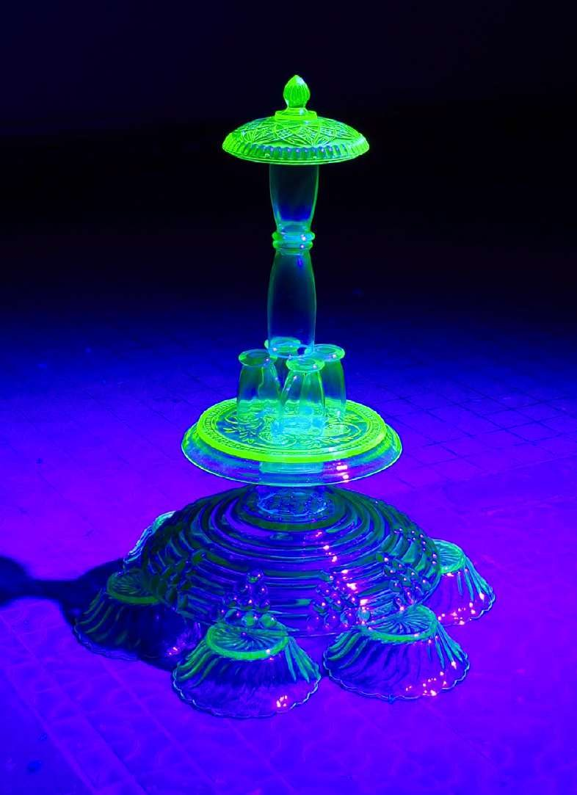

2024
Sculpture en verre à l'uranium, lampe UV
Sculpture en verre à l'uranium, lampe UV
Sculpture prenant la forme d'un empilement de vaisselle en ouraline. En mobilisant ce matériau lié à l'ère atomique, la sculpture détourne des objets domestiques ordinaires pour les faire basculer vers un registre ambigu, entre vestige, artefact et forme quasi architecturale.
Par sa translucidité et sa légère radioactivité, l'ouraline agit comme le révélateur d'une mémoire matérielle discrète, inscrite dans des objets issus d'une période marquée par l'optimisme technologique et ses dérives. À travers un geste d'accumulation, la sculpture évoque un environnement spéculatif où les objets persistent au-delà de leurs usages, brouillant les frontières entre production industrielle et héritage invisible des systèmes humains.